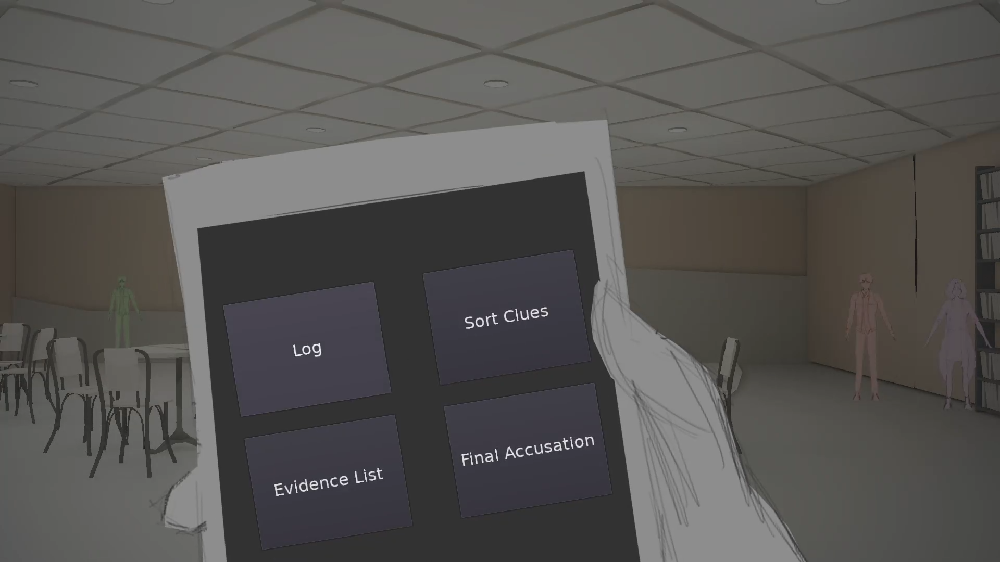
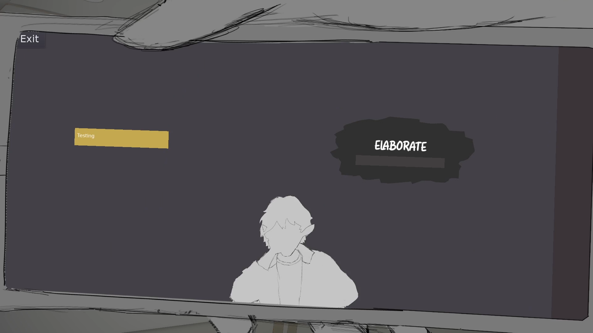
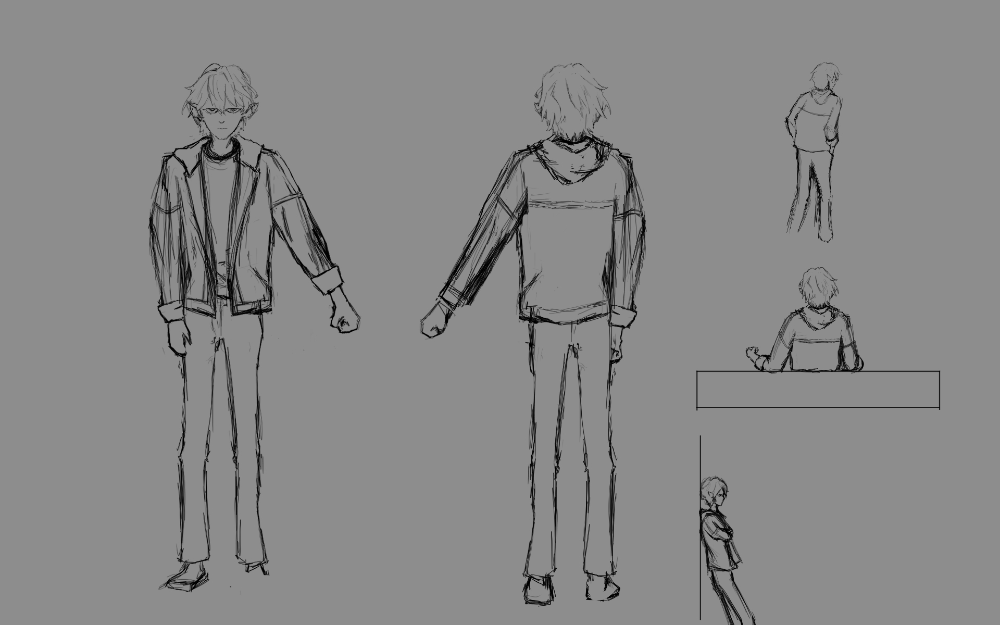
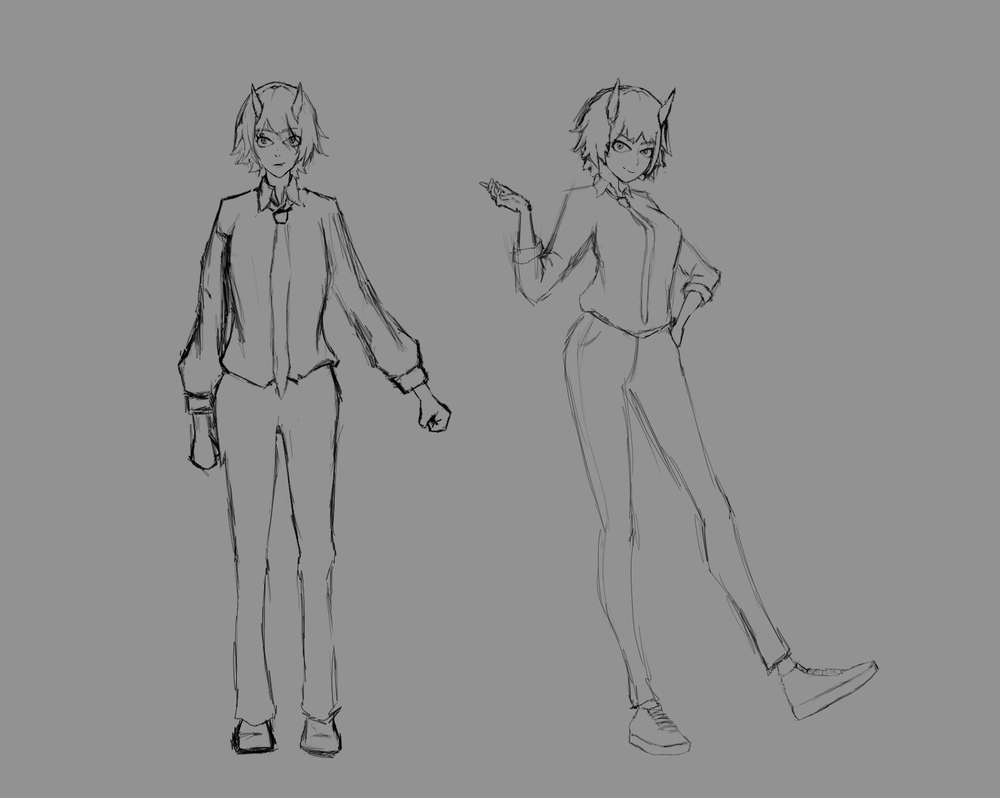

The Night In The Inn
This is a game prototype for testing a better method of playing a mystery game where the player has to pay attention to details instead of just picking from simple options as happens in most mystery games.
The player, as a detective, is given the ability to go and interrogate all the suspects of a murder to figure out who is the real killer. Most of the game takes place within dialogue boxes where reading and understanding the other people's intentions becomes important.






